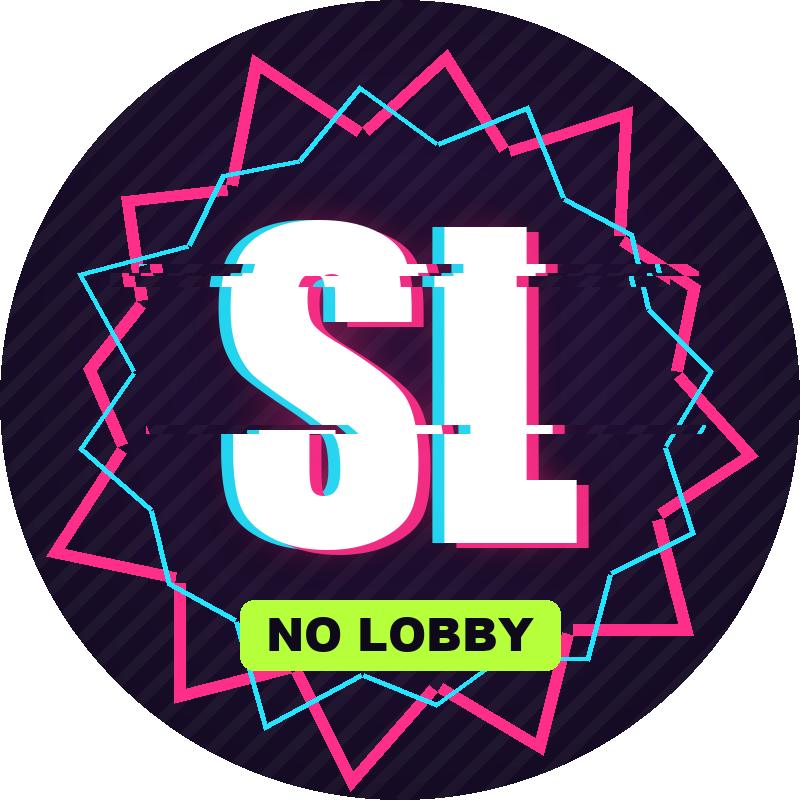

SURTOS NO LOBBY
Os maiores surtos das lives de GTA 6, em cortes curtos.
Fail, susto, risada, jogada impossível e aquele momento em que o chat inteiro grita "CLIPA!". A gente acompanha as lives e traz o melhor, com legenda e sempre com o crédito do streamer.
SurtosNoLobby Radar
O SurtosNoLobby Radar é a ferramenta interna do canal. Ela prepara cortes de lives de criadores que permitem cortes; cada corte é revisado e aprovado manualmente antes de ir para as contas do próprio canal.